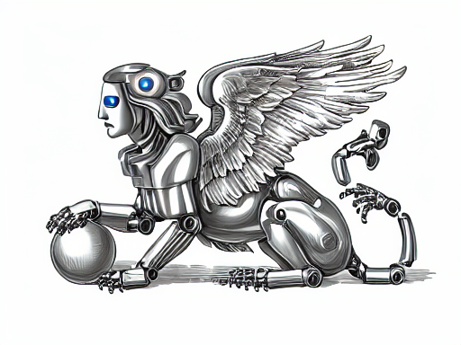
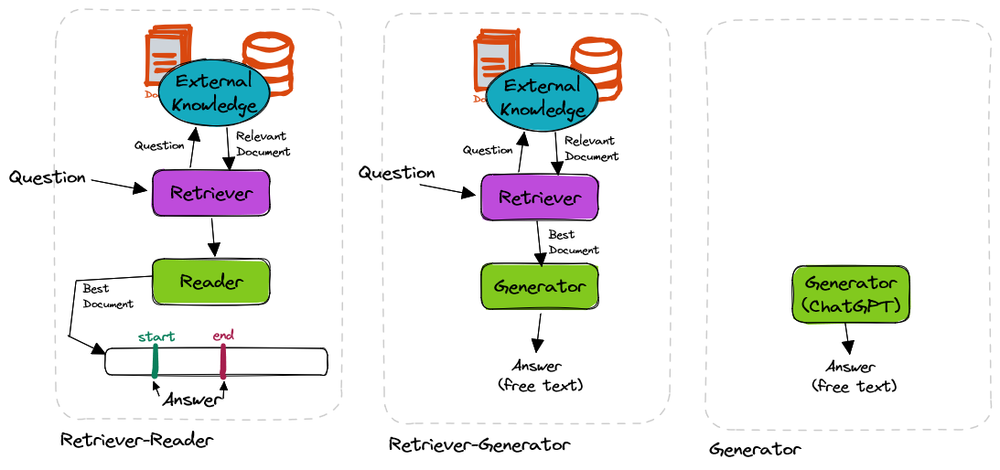

from transformers import pipeline
question_answerer = pipeline("question-answering",
model='distilbert-base-cased-distilled-squad')
context = r"""
Extractive Question Answering is the task of extracting an answer from a text
given a question. An example of a question answering dataset is the SQuAD dataset,
which is entirely based on that task. If you would like to fine-tune a model
on a SQuAD task, you may leverage the
examples/pytorch/question-answering/run_squad.py script.
"""
question = "What is a good example of a question answering dataset?"
result = question_answerer(question=question, context=context)
print(f"Answer: '{result['answer']}', "
f"score: {round(result['score'], 4)}, "
f"start: {result['start']}, end: {result['end']}"
# Answer: 'SQuAD dataset', score: 0.5152, start: 147, end: 160A Comprehensive Guide to Question-Answering in NLP
deep-learning
nlp
Using the power of transformers to unlock hidden knowledge through question-answering apps.
The Unlocking Of Knowledge

The phenomenon of knowledge being locked is common to almost every organization. Knowledge- institutional, technical, introductory etc. is locked in several documents in several places, and needs active search with much efforts going through tomes in order to understand some piece of lore. What if you had an artificial brain who could digest all of this knowledge, and you simply converse with this brain to understand pieces of your lore-verse?
This is no longer science-fiction. Massive language models like ChatGPT have quickly become the norm, and the capabilities of large language models are still being found out. Turns out, you don’t always need a service like ChatGPT, and you can service a lot of your needs using open-source models that can run on a single GPU.
Using NLP models, not only can you unlock your organizational information by enabling intelligent search over large corpora, but can build question-answering apps on top of them, so information retrieval can be automated to an astonishing degree. Q&A apps are one of the best ways to make sense of text data. In this post, we’ll go over this particular application of question-answering, alongwith some basic code to show how to implement them.
Contents: This post gives an overview of the types of question-answering tasks. It covers the different components in a question answering pipeline, alongwith some basic code implementations, reference libraries and examples.
Types of Question-Answering Tasks
There are two ways to divide Question-Answering applications
- Open-Book vs Closed-Book
- Extractive vs Generative
🕮 Open-Book and Closed-Book
The most common type of Q&A task is where you give a context/document to the model, as well as the question. The model then gives you an answer to the question. Since you are giving a context alongwith the question to the model, this is called an open-book QA task. The model answers the question only using the information given. This is analogous to open-book exams, where you are allowed to bring a book to the exam. Then there’s closed-book task where you are not given any context, the model is supposed to answer based on the information is has stored in itself. Because we are passing a ground truth in open-book tasks, they usually perform better, and hence are the preferred setting.
The Problem: Giving the context is extra trouble- what if I have thousands of documents? How can the model find answer through thousands of documents? Let’s answer this question in the next section.
🖋️ Extractive vs Generative
Then we come to the second classification- Extractive vs Generative. In Extractive QA, the answer will be a sentence/phrase from the given document. It will not create new words/sentences, but simply find the most relevant text in the context and return it. Hence it is sort of an advanced search algorithm that retrieves the section you need from the document. Because the returned phrase exists in the ground truth, this method is useful when you need accurate, small answers.
In generative QA, the model will craft an answer based on it’s understanding of the context, instead of simply returning an existing phrase. Because the model is generating text, it is more prone to making errors.
In both of above applications, the returned answers tend to be small, one-liners. Long-form QA is a variant of generative QA, where the answers are supposed to be long.
A Small Example
This is a small example of an extractive QA. Note that the pipeline requires both a context and the question.
Components of QA Systems
Let’s go back to the problem with open-book answering- each question needs a reference document, which cannot be provided manually. The solution is to use another model to retrieve the most relevant document to the question, which then another model can use to do the answering. Hence this becomes a two-stage system, a retriever followed by a reader.
QA systems will hence have these components-
- a database of documents (your knowledge base)
- a retriever component (to retrieve relevant documents)
- an optional reranker component (to re-order the relevant documents)
- a reader component (to extract the answer) or a generator component (to generate an answer)
If you’re using a large language model like GPT-3, this could as simple as a single generator.
Here’s a diagram that summarizes these components as well as how they’re put together:

🕵🏻 Retriever - How Find the Relevant Documents
Let’s say you want to build a question-answering system on a bunch of internal documentation. The documentation is a pile of thousands of documents. To get an answer, you need to pass a question, and alongwith a passage that is relevant to that question. Since finding the passage is a huge task in itself, how is the QA app helpful at all?
The solution is to let a model handle this task as well. This will be a different model than the QA model, and will be called “retriever”. All the documents will be passed to this model to get embeddings for each of them.
What Are Embeddings? (Click to Expand)
Embedding is a numerical/vector representation of an entity, in this case a document. Embeddings of two similar documents will be closer to each other numerically.
Now, when we pass a question, we’ll compute the embeddings of the question as well. We’ll find the closest documents to the given question by comparing their embeddings. This is how finding relevant documents is automated using a model.
Finding the relevant document is in itself an application. Sometimes you don’t need a QA on top, finding a needle in the haystack is beneficial in itself. This is called “Semantic Search”, and is extremely easy to implement with a significant improvement in productivity.
⚖ Reranking
For thousands and millions of documents, the performance of a retriever alone can be insufficient. It could return documents that may be related to some keywords in the query, but not related to the query at all. In order to enhance the results of our search, we could do reranking of the results.
The retriever returns us a list of 100 documents, and reranker will again evaluate which of these 100 are most relevant to the query. Reranking has been proven to significantly improve the results for tasks like QA. However an extra model will be compute-intensive too. If the number of documents is not too high, re-ranking may not be necessary.
✍🏻 Get Answer Using Reader / Generator
Now that you have a context for the given question, you can pass both to a QA model that can (extract or generate) answer. But first, let us define this “Reader” model.
If this is an extractive QA, i.e. highlighting the relevant phrase, you can use models like BERT fine-tuned on open-source QA datasets like SQuAD. If this is a generative QA, we use a model like BART/T5/GPT-2
The Types of Transformers (Click to Expand)
There are three types of transformer models: Encoder, Decoder, and encoder-decoder. Encoders, like BERT, are suited to understand given text, Decoders like GPTs are suited to generate new text, Encoder-Decoders like BART/T5 are suited to generate text based on given texts.
Here are examples for all the three types of components- a retriever, an answer reader and an answer generator
The retriever example uses small sentences as corpus, but it also performs remarkably well if the corpus is large paragraphs and documents.
from sentence_transformers import SentenceTransformer, util
import torch
# get the embedding model
embedder = SentenceTransformer('all-MiniLM-L6-v2')
# Corpus with example sentences
# works well with large paragraphs too
corpus = ['A man is eating food.',
'A man is eating a piece of bread.',
'The girl is carrying a baby.',
'A man is riding a horse.',
'A woman is playing violin.',
'Two men pushed carts through the woods.',
'A man is riding a white horse on an enclosed ground.',
'A monkey is playing drums.',
'A cheetah is running behind its prey.'
]
# compute embeddings for the entire corpus- one-time step.
corpus_embeddings = embedder.encode(corpus, convert_to_tensor=True)
# give the query for which most similar document is to be retrieved.
query = 'A man is eating pasta.'
# get the embedding for the query
query_embedding = embedder.encode(query, convert_to_tensor=True)
# get the closest 5 documents to the query in embedding space.
cos_scores = util.cos_sim(query_embedding, corpus_embeddings)[0]
top_results = torch.topk(cos_scores, k=5)
print("Query:", query, "\nSimilar Documents:")
for score, idx in zip(top_results[0], top_results[1]):
print(corpus[idx], "(Score: {:.4f})".format(score))Output:
Query: A man is eating pasta.
Similar Documents:
A man is eating food. (Score: 0.7035)
A man is eating a piece of bread. (Score: 0.5272)
A man is riding a horse. (Score: 0.1889)
A man is riding a white horse on an enclosed ground. (Score: 0.1047)
A cheetah is running behind its prey. (Score: 0.0980)from transformers import pipeline
question_answerer = pipeline("question-answering", model='distilbert-base-cased-distilled-squad')
context = r"""
Extractive Question Answering is the task of extracting an answer from a text given a question. An example of a
question answering dataset is the SQuAD dataset, which is entirely based on that task. If you would like to fine-tune
a model on a SQuAD task, you may leverage the examples/pytorch/question-answering/run_squad.py script.
"""
result = question_answerer(question="What is a good example of a question answering dataset?", context=context)
print(
f"Answer: '{result['answer']}', score: {round(result['score'], 4)}, start: {result['start']}, end: {result['end']}"
# Answer: 'SQuAD dataset', score: 0.5152, start: 147, end: 160import torch
from transformers import AutoTokenizer, AutoModel, AutoModelForSeq2SeqLM
model_name = "vblagoje/bart_lfqa"
device = torch.device('cuda' if torch.cuda.is_available() else 'cpu')
tokenizer = AutoTokenizer.from_pretrained(model_name)
model = AutoModelForSeq2SeqLM.from_pretrained(model_name)
model = model.to(device)
# it all starts with a question/query
query = "Why does water heated to room temperature feel colder than the air around it?"
# given the question above suppose these documents below were found in some document store
documents = ["when the skin is completely wet. The body continuously loses water by...",
"at greater pressures. There is an ambiguity, however, as to the meaning of the terms 'heating' and 'cooling'...",
"are not in a relation of thermal equilibrium, heat will flow from the hotter to the colder, by whatever pathway...",
"air condition and moving along a line of constant enthalpy toward a state of higher humidity. A simple example ...",
"Thermal contact conductance In physics, thermal contact conductance is the study of heat conduction between solid ..."]
# concatenate question and support documents into BART input
conditioned_doc = "<P> " + " <P> ".join([d for d in documents])
query_and_docs = "question: {} context: {}".format(query, conditioned_doc)
model_input = tokenizer(query_and_docs, truncation=True, padding=True, return_tensors="pt")
generated_answers_encoded = model.generate(input_ids=model_input["input_ids"].to(device),
attention_mask=model_input["attention_mask"].to(device))
tokenizer.batch_decode(generated_answers_encoded, skip_special_tokens=True,clean_up_tokenization_spaces=True)
# below is the abstractive answer generated by the model
"""
When you heat water to room temperature, it loses heat to the air around it.
When you cool it down, it gains heat back from the air, which is why it feels colder
than the air surrounding it. It's the same reason why you feel cold when you turn
on a fan. The air around you is losing heat, and the water is gaining heat.
""" 🌌 Retrieval-Augmented Generator
Then there’s another approach where you combine both retriever and generator and train them on the same corpus. Earlier, the retriever and generator were distinct models trained on two different datasets. Here, you have two models trained on the same task, same dataset. This is an active area of research, still not matured- with Deepmind publishing architectures like RETRO, Meta releasing DPR, etc.
Question-Answering vs Chatbots
It’s a natural question- how is question-answering different from a chatbot? A chatbot is a lot of things - it could be a very simple lookup tool, or a massive ChatGPT. A chatbot may not always need a sophisticated transformer-based approach. You could build a simple chatbot that identifies the query and maps it to internal FAQs, and reply with options instead of a natural language reply. Conversational AI also needs to have some session memory, i.e. being able to remember the history of the conversation.
The use of QA and Conversational AI is hence different, although combining both chatbot and Q&A pipeline can be helpful in many cases. This post only covered QA, and not Chatbot.
A Real Project Using Generative QA
This post only covers some overview of the techniques and terms, but the examples provided are very basic. If you want to apply this to a real world task, it will take some more engineering. Currently I’m working on a project, a generative QA task on a corpus of documents, and that will require a new post entirely.
However there are some interesting huggingface spaces on QA which are worth looking into.
- Wikipedia Assistant - Uses BART model for generative question answering on wikipedia corpus.
- Haystack QA - Uses roBERTa for extractive question answering.
Domain Adaptation
Most of the models available online have been fine-tuned on datasets like SQuAD, NQ etc. which might be from a completely different domain compared to yours. In this case, will they work? Generally, those abilities should transfer to any domain, but fine-tuning can give you massive boosts in performance. What is the best approach to do this fine-tuning- this is an area of active research, so too early to write. But fine-tuning on a Question-Answer dataset is relatively easy.
Resources
Deep Learning, unlike other parts of computing, requires you to shell out $$ for the most meaningful applications. This is even more true for NLP than computer vision or tabular ML. So there are three tiers of developers- the GPT-3 havers, the GPU havers, the Colab-ers.
Paid GPT-3 API - Want to build your own QA application? A lot depends on the budget- if it’s an enterprise application where a paid GPT-3 API is available, there are libraries like LangChain or GPT-Index that abstract away a lot of boilerplate code and let you easily build a question-answering chain in a few lines of code. LangChain also supports some other open-source huggingface models.
Lot of Cloud Compute - If using a paid GPT-3 API is not possible, but there’s budget enough for several GPUs- you can use open-source large language models like Flan-T5, OPT-IML, GPT-J/Neo etc. Huggingface hosts all of these, and is really easy to use and fine-tune.
Free-tier Google Colab - If you want to build a simple prototype on the free-tier of Google Colab, you’d be off to using the smaller models. Models like Flan-T5 do quite well even at small sizes. Generative QA don’t do that well at these sizes, but if fine-tuning could do the trick.
Libraries
The best place for NLP on the internet is, without doubt, Huggingface. It has very good documentation for all NLP tasks, a lot of models that can be easily downloaded and used. This is a good starting page for QA.
Haystack is library that is built specifically for Question-Answering systems, has easy implementation for retriever/reader/generator etc, and you can use huggingface transformer models with it.
If you’re using GPT-3 API, LangChain can very helpful in building a QA app. GPT-Index is another library that has useful utilities to build QA pipelines on top of existing document base.